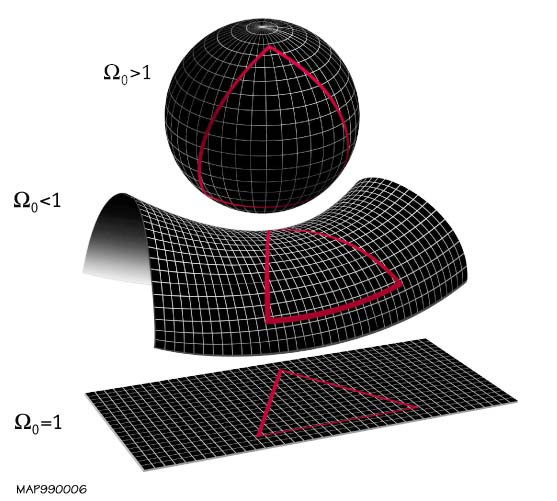
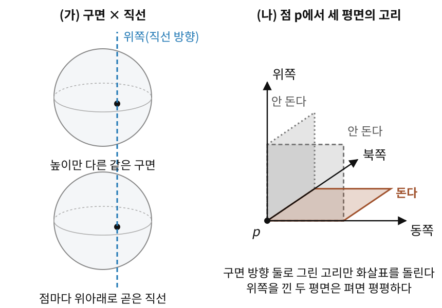

“이 공간은 휘어져 있다.” 우리는 이 말을 이미 여러 번 했다. 평행이동(곡선을 따라 돌리지 않고 옮기기)의 경로 의존성으로 확인했고, 측지선(곡면 위의 곧은 길)이 직선과 다르게 행동하는 것도 보았다. 하지만 한 가지 질문이 남아 있다: 얼마나 휘어져 있는가?

양의 곡률(구면), 0 곡률(평면), 음의 곡률(안장면)에서의 측지 삼각형. 양의 곡률에서는 삼각형 내각의 합이 180°를 넘고, 음의 곡률에서는 180°보다 작다.
2차원 곡면에서는 비교적 단순했다. 가우스 곡률 K라는 하나의 숫자가 각 점의 휘어짐을 완전히 나타냈다. 구면은 K>0, 안장은 K<0, 평면은 K=0. 하지만 3차원으로 넘어가면 이야기가 달라진다. 3차원 공간의 한 점에서 xy-방향, yz-방향, xz-방향의 휘어짐이 모두 다를 수 있다. 하나의 숫자로는 이 정보를 담을 수 없다.
그렇다면 어떤 방향에서 얼마나 휘어져 있는지를 모든 방향에 대해 한꺼번에 적어 두는 표가 필요하다. 그 표는 어떤 모양이고, 거기에는 숫자가 몇 개나 들어 있을까?
리만 곡률 텐서: 아주 작은 고리를 돌 때의 어긋남
휘어진 곡면에서 벡터를 닫힌 경로를 따라 평행이동하면, 돌아왔을 때 처음 방향과 어긋난다. 이 어긋남(홀로노미)의 크기는 경로가 둘러싼 영역의 곡률을 적분한 값이었다. 넓은 영역을 도는 경로는 여러 점의 휘어짐을 뭉뚱그려 보여 준다. 그렇다면 한 점의 휘어짐만 알고 싶을 때는 어떻게 해야 할까? 이 아이디어를 극한까지 밀어붙여 보자.
역사: 열이 퍼지는 문제에서 나온 곡률 텐서
가우스는 2차원 곡면의 휘어짐을 숫자 하나(가우스 곡률 K)로 적었다. 리만은 1854년 교수 자격 강연(Habilitationsvortrag)에서 3차원 이상에서는 한 점에서도 방향 평면마다 휘어짐이 다를 수 있다고 말했지만, 그 강연에는 식이 거의 없었다. 방향마다의 휘어짐을 첨자 넷 달린 식으로 처음 적은 곳은 뜻밖에도 열이 퍼지는 문제였다.
파리 과학 아카데미는 상금을 건 공모 문제를 냈다. 균질한 고체 안에서 어느 순간 온도가 같은 점들을 이은 곡선들이, 시간이 지나도 계속 온도가 같은 곡선으로 남으려면 물체의 열 상태가 어떠해야 하는가. 리만은 1861년 답안(Commentatio mathematica)을 내면서 먼저 더 일반적인 물음부터 풀었다. 그 과정에서 이런 물음이 나왔다. 거리를 재는 식 ∑aikdxidxk가 주어졌을 때, 좌표를 바꿔서 이것을 평평한 공간의 식 ∑(dyi)2 꼴로 만들 수 있는가? 리만은 그렇게 만들 수 있으려면 첨자 넷 달린 어떤 양들이 모두 0이어야 한다는 것을 보였다. 그 양들이 오늘날 우리가 쓰는 곡률 텐서의 성분이다.
상은 끝내 아무에게도 주어지지 않았고, 이 답안은 리만이 세상을 떠난 뒤 1876년에야 그의 전집에 실려 세상에 나왔다. 좌표를 아무리 바꿔도 없앨 수 없는 것을 찾는다는 이 물음은 이 장 내내 다시 나온다.
아주 작은 평행사변형을 한 바퀴
반지름 1인 구 위의 한 점에서 동쪽으로 0.1, 북쪽으로 0.1씩 가는 작은 정사각형 고리를 그리자. 화살표(벡터) 하나를 돌리지 않고 이 고리를 따라 한 바퀴 옮기면, 돌아온 화살표는 처음보다 약 Δθ≈0.0100 라디안(0.57°) 돌아가 있다. 고리의 넓이도 약 0.1×0.1=0.01이다. 회전각을 넓이로 나누면 1, 곧 이 구의 가우스 곡률 K=1이 나온다. 고리를 작게 줄일수록 이 나눗셈은 그 한 점의 값에 가까워진다.
이제 3차원으로 가 보자. 방향에 따라 휘어짐이 다른 3차원 공간이 필요한데, 3차원 구면은 어느 방향으로나 똑같이 휘어 있고 평평한 공간은 어느 방향으로나 0이라 둘 다 시험대가 되지 못한다. 휘는 방향과 휘지 않는 방향을 한 점에 함께 가진 가장 간단한 공간은, 구면의 각 점에 위아래로 곧은 직선을 하나씩 붙인 공간(구면 × 직선)이다. 한 점에서 고를 수 있는 방향은 동쪽·북쪽·위쪽 셋이다. 동쪽-북쪽 평면에 한 변 0.1 고리를 그리면, 구면 쪽을 가리키던 화살표는 여전히 약 0.01 라디안 돈다. 그런데 동쪽-위쪽 평면에 같은 크기의 고리를 그리면 어떤 화살표도 돌지 않는다. 그 평면 방향으로 뻗은 면은 원기둥 옆면처럼 펴서 평평하게 만들 수 있기 때문이다. 같은 점인데도 고리를 어느 평면에 그리느냐에 따라 답이 다르다.

구면 × 직선. (가) 높이만 다른 같은 구면이 쌓여 있고, 점마다 위아래로 곧은 직선(파란 점선)이 지난다. (나) 한 점 p에서 동쪽·북쪽·위쪽 가운데 둘로 작은 고리를 그리면, 구면 방향 둘로 그린 고리(갈색)만 화살표를 돌리고 위쪽을 낀 두 고리(회색)는 돌리지 않는다
그래서 한 점의 휘어짐을 숫자 하나로는 말할 수 없다. "어느 평면에 고리를 그렸을 때, 어느 화살표가, 넓이 1당 얼마나 돌아가는가"를 방향별로 모두 적은 표가 필요하다. 이 표를 리만 곡률 텐서라 부른다. 입력은 방향 두 개(고리를 그릴 평면)와 벡터 하나(옮길 화살표), 출력은 벡터 하나(어긋남)다. 텐서는 좌표를 바꿀 때 성분이 정해진 규칙대로만 바뀌는 양이다(PyTorch의 tensor(다차원 배열)와 이름만 같다).
식으로 쓰면, 한 점에서 두 방향 u, v로 각각 ϵ(엡실론)만큼 가서 만든 작은 평행사변형을 따라 벡터 W를 옮기고, 돌아온 변화량을 넓이 ϵ2으로 나눈 뒤 ϵ→0으로 보낸다. 그 극한이 곡률 텐서가 u, v, W에 대해 내놓는 값이다.
공변미분의 순서를 바꾸면
같은 내용을 미분으로도 말할 수 있다. 평평한 종이 위에서는 편미분의 순서가 상관없다: ∂x∂y∂2f=∂y∂x∂2f. 휘어진 공간의 공변미분(좌표 탓 가짜 변화를 뺀 미분. 이웃한 점의 벡터를 비교하는 규칙인 접속을 쓴다)에서는 이것이 깨질 수 있다. ∇u∇vW는 "먼저 v 방향으로 미분하고, 그 결과를 u 방향으로 미분"한 것이고, ∇v∇uW는 순서를 바꾼 것이다. v 먼저 가는 길과 u 먼저 가는 길은 함께 작은 평행사변형 하나를 이루므로, 두 순서의 차이가 곧 그 고리를 한 바퀴 돈 어긋남이다. 그래서 곡률 텐서를 다음과 같이 정의한다.
마지막 항의 [u,v]는 리 괄호(Lie bracket)로, u 방향과 v 방향으로 번갈아 조금씩 갔다가 되돌아왔을 때 제자리로 닫히지 않고 남는 틈이다. 좌표를 다이얼(값을 돌려 맞추는 손잡이)로 보면, x 다이얼을 0.1, y 다이얼을 0.1 돌린 뒤 둘을 거꾸로 되돌리면 정확히 제자리다. 그래서 좌표 방향끼리는 [u,v]=0이고 마지막 항이 사라진다. 좌표 성분으로 쓰면 곡률은 크리스토펠 기호와 그 미분만으로 계산된다.
리만 곡률 텐서 (방향별 휘어짐 / Riemann Curvature Tensor, Rijkl) — 두 방향 u, v로 공변미분한 순서를 바꿨을 때의 차이를 측정하는 (1,3)-텐서(위첨자 1개·아래첨자 3개, 곧 벡터 셋을 받아 벡터 하나를 내놓는 텐서). 직관적으로, 미소 평행사변형을 따라 벡터를 평행이동했을 때 "얼마나 어긋나는가"를 점과 방향의 함수로 기록한 것이다.
반지름 r인 구 위에 한 변 ϵ인 작은 사각형 고리를 놓고 벡터 W를 한 바퀴 평행이동해 보자. 위젯은 돌아온 벡터가 돈 각 Δθ와 고리의 넓이를 함께 보여 준다. 고리 크기와 구의 반지름을 바꾸고, 도는 순서(u 먼저 / v 먼저)도 바꿔 가며 두 숫자를 견주어 보자. 구면은 끌어서 돌릴 수 있다.
문제 1 — 팔을 비틀지 않고 한 바퀴
확인 오른팔을 앞으로 곧게 뻗고 엄지를 위로 세운다. 팔을 축으로 비틀지 않은 채 (가) 팔을 앞에서 머리 위로 올리고, (나) 머리 위에서 오른쪽 옆으로 내리고, (다) 옆에서 다시 앞으로 수평으로 돌린다. 팔은 처음 자리로 돌아왔다. 엄지는 어디를 가리키는가? 팔 길이를 1로 보고 손끝이 그린 길을 반지름 1인 구면 위의 고리로 볼 때, 엄지가 돈 각도를 그 고리가 둘러싼 넓이와 견주어라.
같이 풀기 세션 1
김민준
팔을 한 번도 비틀지 않았으니까 엄지도 그대로 위겠죠. 팔도 제자리로 왔고요.
선생님
머리로 정하지 말고 직접 해 봐요. 한 단계가 끝날 때마다 엄지가 어디를 가리키는지 말해 보세요.
김민준
(가) 머리 위로 올리니까 엄지가 뒤를 가리켜요. (나) 옆으로 내려도 계속 뒤고요. (다) 앞으로 돌리면…
김민준
어, 엄지가 오른쪽을 가리켜요. 비튼 적이 없는데 90° 돌아갔어요.
선생님
팔을 앞에서 머리 위로 올렸다가 같은 길로 곧장 내리기만 하면요?
이서연
그건 엄지가 위로 그대로 돌아와요. 손끝이 같은 길을 오가기만 해서 아무것도 둘러싸지 않으니까요. 그럼 이번 길이 둘러싼 게 있다는 거네요.
이서연
앞, 머리 위, 오른쪽은 서로 90°씩 떨어져 있어요. 손끝이 지난 세 길은 구면의 대원(구의 중심을 지나는 큰 원)의 4분의 1씩이고, 둘러싼 삼각형은 구면의 8분의 1이에요. 넓이가 4π÷8=π/2이고, 엄지가 돈 90°도 라디안으로 π/2예요. 회전각이 넓이와 같아요.
김민준
조교님이 버그를 찾을 때 "머리로 따지지 말고 한 줄씩 찍어 보라"고 하시던 게 이거네요. 한 단계씩 따라가니까 어디서 달라졌는지 보여요.
문제 2 — 작은 고리를 돌면 벡터는 얼마나 돌아가나
킬러 반지름 1인 구의 북극을 중심으로 여위도(북극에서 잰 각도) θ0인 원을 따라 벡터를 한 바퀴 평행이동한다. (1) θ0=0.1과 0.2일 때 회전각을 구하고, 「회전각 ÷ 넓이 = 곡률」이 원 모양 고리에서도 성립하는지 확인하라. (2) 같은 원을 반대 방향으로 돌면 회전각은 어떻게 되는가? (3) 이 결과를 R(u,v)W와 연결하라.
위젯의 「문제 2 불러오기」는 반지름 1인 구에 한 변 0.2인 사각형 고리를 놓는다. 원은 아니지만, 모양이 다른 고리에서도 회전각과 넓이가 어떤 관계인지 견주어 볼 수 있다.
같이 풀기 세션 2
김민준
코드로 평행이동을 한 바퀴 돌려 봤어요. θ0=0.1일 때 회전각이 0.0314 라디안이에요. 넓이로 나누면 되니까, 한 변이 0.1이면 넓이는 0.12=0.01이고… 곡률이 3.14가 나와요. 반지름 1인 구인데요?
선생님
본문의 고리는 정사각형이었죠. 이번 고리는 무슨 모양이에요?
김민준
원이요! 반지름 0.1인 원의 넓이는 π×0.12≈0.0314니까 나누면 거의 1이네요. 정사각형 넓이 공식을 원에 넣었어요.
선생님
1이 나온 게 우연인지는 숫자 하나로 알 수 없어요. θ0를 두 배로 해 보면요?
김민준
θ0=0.2에서 0.1252가 나와요. 두 배가 아니라 거의 네 배예요. 크기를 두 배로 해서 네 배가 되는 건 넓이죠. 그런데 π×0.22=0.1257로 나누면 0.9967이에요. 딱 1은 아니네요.
이서연
원의 넓이 공식 πθ02도 평면에서 쓰는 공식이잖아. 구면 위 극지방 모자의 실제 넓이는 2π(1−cosθ0)이고, 0.2에서 0.1252야. 위도 원의 홀로노미도 정확히 2π(1−cosθ0)이니까, 반지름 1인 구라 K=1이고 회전각 = K× 넓이가 딱 맞아.
김민준
실험할 때 조교님이 "점 하나 찍고 결론 내지 말고 크기를 바꿔서 두 점 이상 찍어 보라"고 하셨는데, 이래서였네요. 위젯에서 문제 2를 불러와 한 변 0.2 사각형을 돌려 보니 회전각 0.0400, 넓이 0.0400이에요. 원이든 사각형이든 넓이만큼 돌아요.
선생님
그럼 (2)번. 반대 방향으로 돌면요?
이서연
같은 원이니까 같은 각만큼 같은 쪽으로 돌지 않을까요? 경로가 같잖아요.
선생님
한 바퀴 돌고, 곧바로 같은 원을 거꾸로 한 바퀴 더 돌면 벡터는 어떻게 되죠?
이서연
거꾸로 도는 건 방금 한 평행이동을 되감는 거니까 원래 벡터로 돌아와야 해요. 그런데 두 번 다 같은 쪽으로 돌면 두 배로 돌아가 버리잖아요. 모순이에요. 그러니까 반대 방향으로 돌면 회전도 반대 방향이네요.
김민준
아까 팔 돌리기를 거꾸로 해 봤어요. 앞에서 오른쪽 옆으로, 거기서 머리 위로, 다시 앞으로 내렸더니 엄지가 이번엔 왼쪽을 가리켜요.
선생님
그게 R(u,v)=−R(v,u)의 뜻이에요. u 먼저 가고 v로 가는 고리와, v 먼저 가는 고리는 도는 방향이 반대거든요.
이서연
그린 정리에서 경로 방향을 바꾸면 선적분 부호가 바뀌던 것과 같네요. 넓이에도 방향이 있는 거군요.
선생님
이제 (3)번을 묶어 봅시다. 한 변이 ϵ인 작은 고리를 돌면 벡터의 변화는 대략 −ϵ2R(u,v)W예요. 넓이가 ϵ2에 비례하는 이유, 그리고 순서를 바꾸면 부호가 바뀌는 이유가 방금 두 학생이 찾은 두 가지예요.